Soru 1Cevap: C
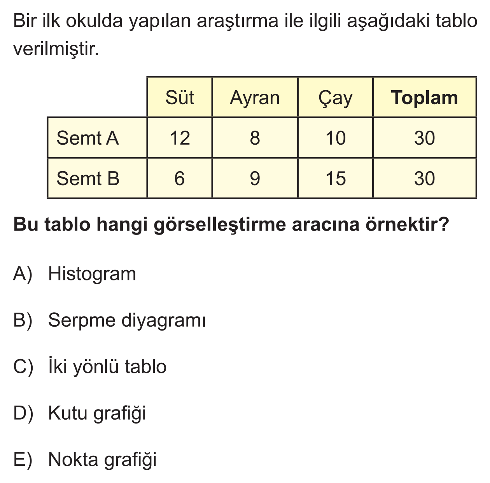
Çözüm
- Tabloda iki kategorik değişken (semt ve içecek) birlikte gösterilmiş.
- Satırlar bir değişkenin, sütunlar diğer değişkenin kategorileridir; hücrelerde sıklıklar var.
- Bu bir iki yönlü (çapraz) tablodur → C.
Cevap: C
Soru 2Cevap: B
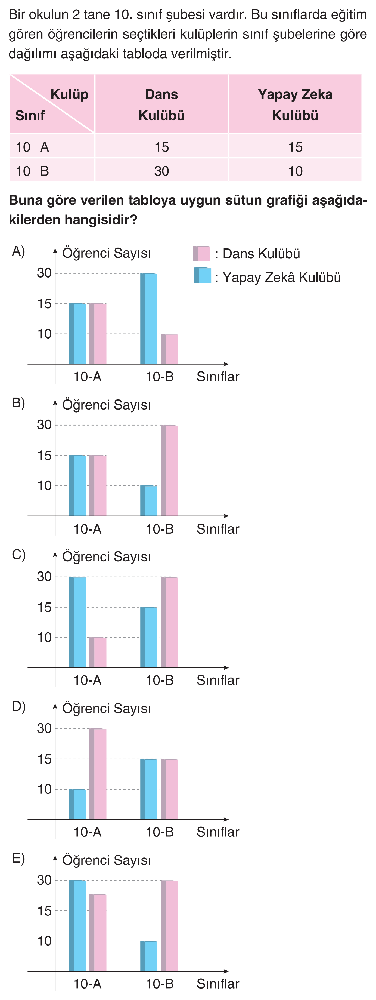
Çözüm
- 10-A: Dans 15, Yapay Zekâ 15; 10-B: Dans 30, Yapay Zekâ 10.
- Pembe sütunlar Dans, mavi sütunlar Yapay Zekâ kulübüdür.
- 10-B'de pembe 30, mavi 10 olan ve 10-A'da ikisi 15 olan grafik B'dir.
Cevap: B
Soru 3Cevap: B
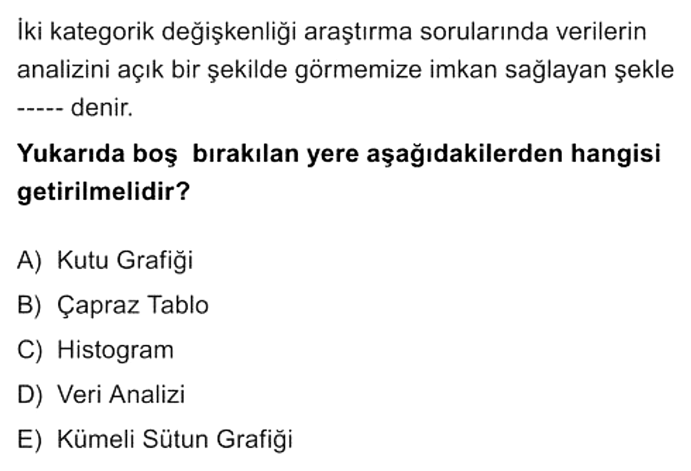
Çözüm
- İki kategorik değişkenin kategorilerini satır ve sütunlarda birlikte gösteren araç çapraz tablodur.
- Kutu grafiği ve histogram nicel veriler içindir.
- Boşluk: Çapraz tablo → B.
Cevap: B
Soru 4Cevap: C
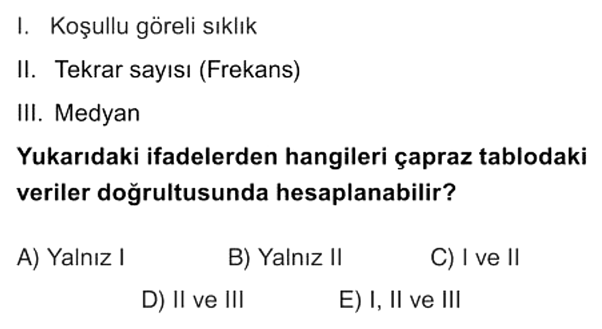
Çözüm
- Çapraz tablo hücrelerinde sıklıklar (tekrar sayıları) bulunur.
- Hücre sıklığı ilgili toplama bölünerek koşullu göreli sıklık hesaplanır.
- Medyan sıralanabilir sayısal veri gerektirir; kategorik veride hesaplanmaz. Cevap: I ve II.
Cevap: C
Soru 5Cevap: E
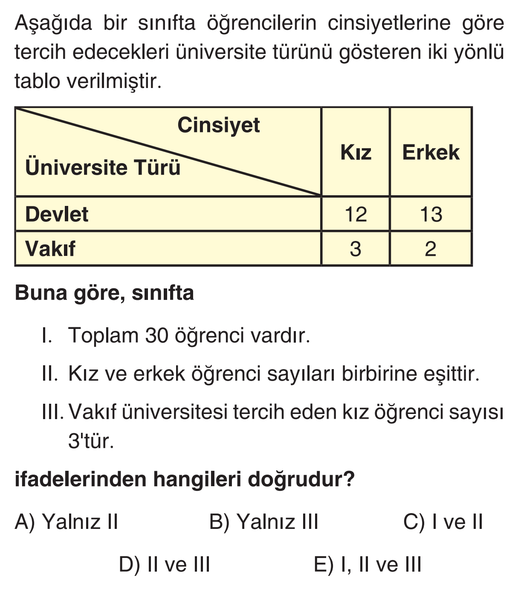
Çözüm
- Toplam: 12 + 13 + 3 + 2 = 30 öğrenci (I doğru).
- Kız: 12 + 3 = 15, erkek: 13 + 2 = 15 → eşit (II doğru).
- Vakıf tercih eden kız 3 (III doğru). Cevap: I, II ve III.
Cevap: E
Soru 6Cevap: E
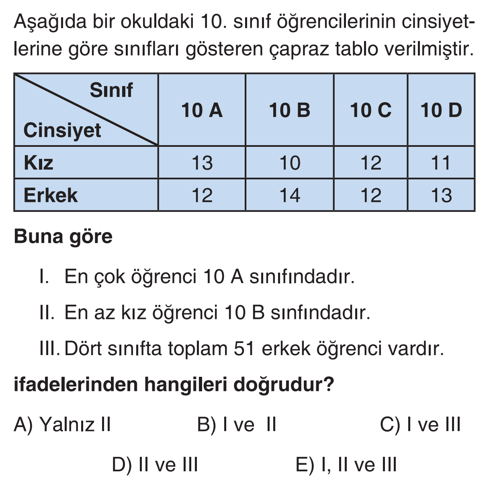
Çözüm
- Sınıf mevcutları: 10A 25, 10B 24, 10C 24, 10D 24 → en çok 10A (I doğru).
- Kız sayıları 13, 10, 12, 11 → en az 10B (II doğru).
- Erkek toplamı 12 + 14 + 12 + 13 = 51 (III doğru). Cevap: I, II ve III.
Cevap: E
Soru 7Cevap: C
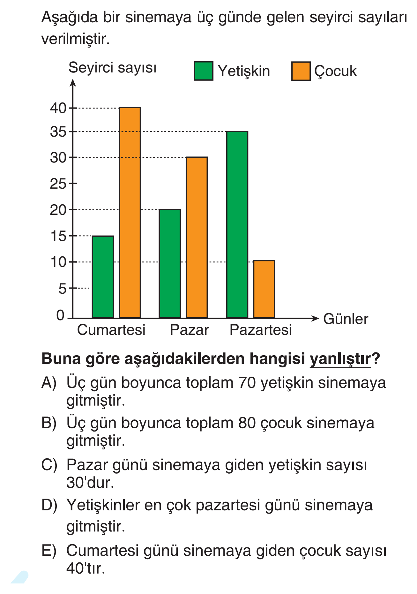
Çözüm
- Yetişkin: 15, 20, 35 → toplam 70 (A doğru). Çocuk: 40, 30, 10 → toplam 80 (B doğru).
- Pazar günü yetişkin sayısı 20'dir; C'deki 30 çocuk sayısıdır.
- Yanlış ifade C.
Cevap: C
Soru 8Cevap: C
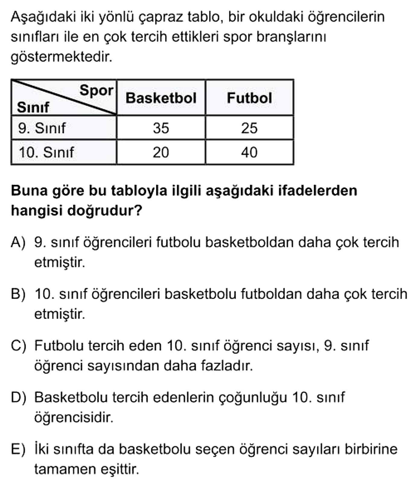
Çözüm
- 9. sınıf: basketbol 35, futbol 25 → A yanlış. 10. sınıf: basketbol 20, futbol 40 → B yanlış.
- Futbol: 10. sınıf 40 > 9. sınıf 25 → C doğru.
- Basketbol: 9. sınıf 35, 10. sınıf 20 → D ve E yanlış. Cevap C.
Cevap: C
Soru 9Cevap: D
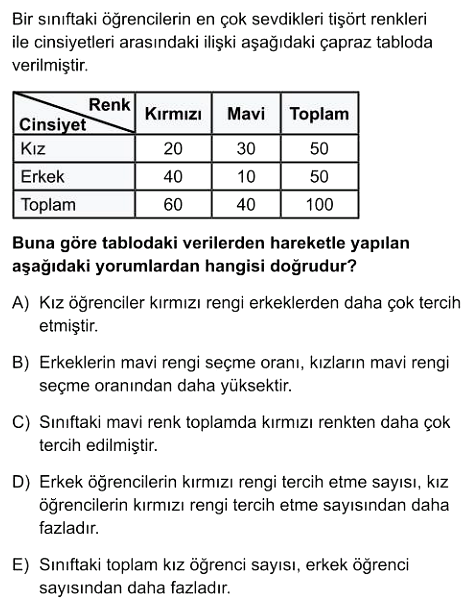
Çözüm
- Kırmızı: kız 20, erkek 40 → A yanlış, D doğru.
- Mavi oranı: erkek 10/50, kız 30/50 → B yanlış; toplam mavi 40 < kırmızı 60 → C yanlış.
- Kız ve erkek sayıları eşit (50) → E yanlış. Cevap D.
Cevap: D
Soru 10Cevap: C
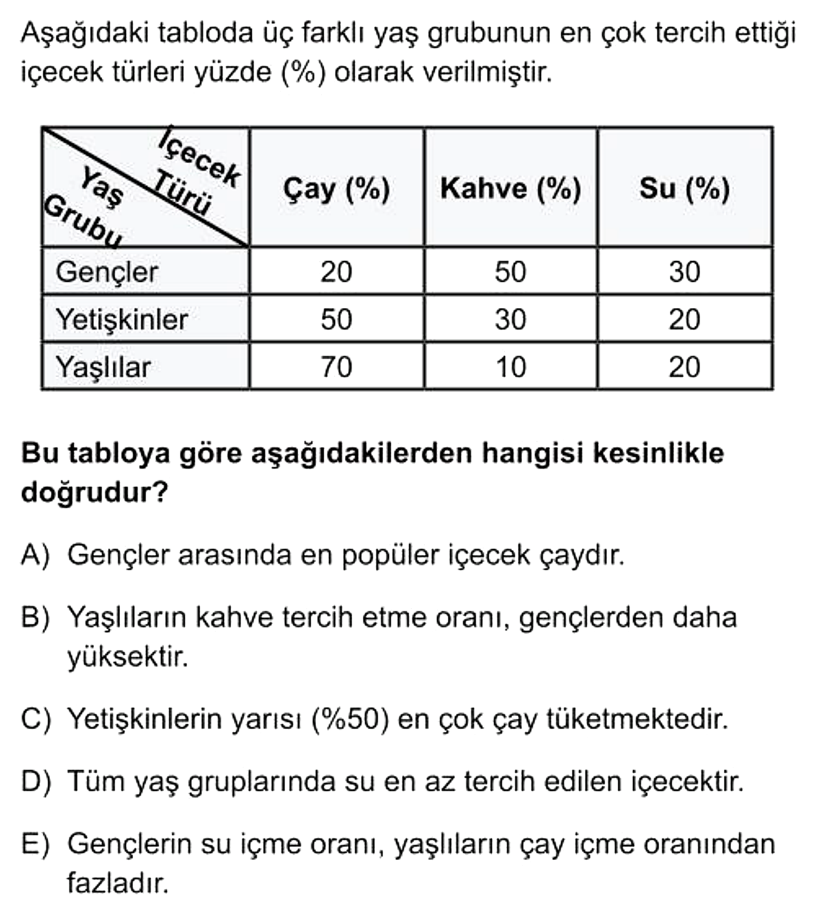
Çözüm
- Gençlerde en yüksek oran kahve (%50) → A yanlış; yaşlıların kahve oranı %10 < %50 → B yanlış.
- Yetişkinlerin %50'si çay tercih ediyor → C doğru.
- Gençlerde su %30 > çay %20 → D yanlış; %30 < %70 → E yanlış. Cevap C.
Cevap: C
Soru 11Cevap: C
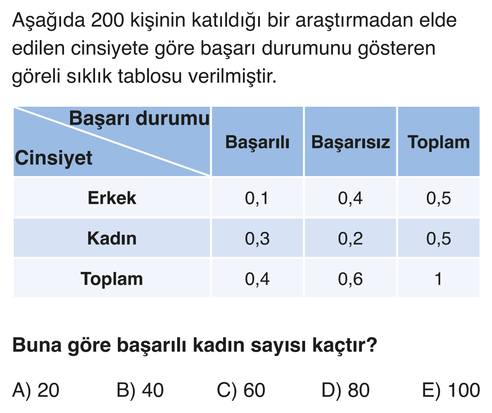
Çözüm
- Göreli sıklık = hücre sıklığı / toplam gözlem sayısı.
- Başarılı kadın göreli sıklığı 0,3; toplam 200 kişi.
- Başarılı kadın sayısı 0,3 · 200 = 60 → C.
Cevap: C
Soru 12Cevap: E
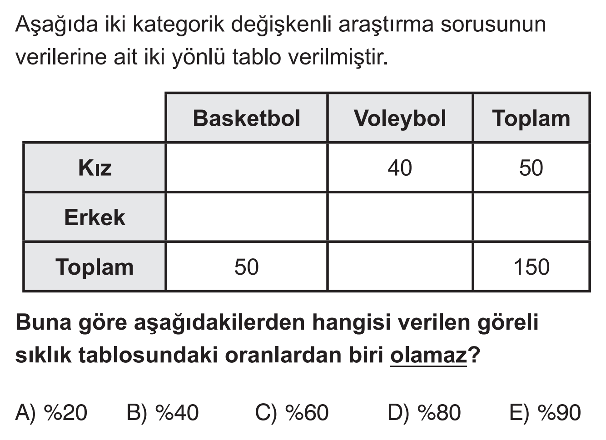
Çözüm
- Kız: basketbol 50 − 40 = 10; erkek basketbol 50 − 10 = 40; erkek toplam 100, erkek voleybol 60.
- Satır oranları: kız %20–%80, erkek %40–%60; sütun oranları: basketbol %20–%80, voleybol %40–%60.
- Oranların hiçbiri %90 olamaz → E.
Cevap: E
Soru 13Cevap: C
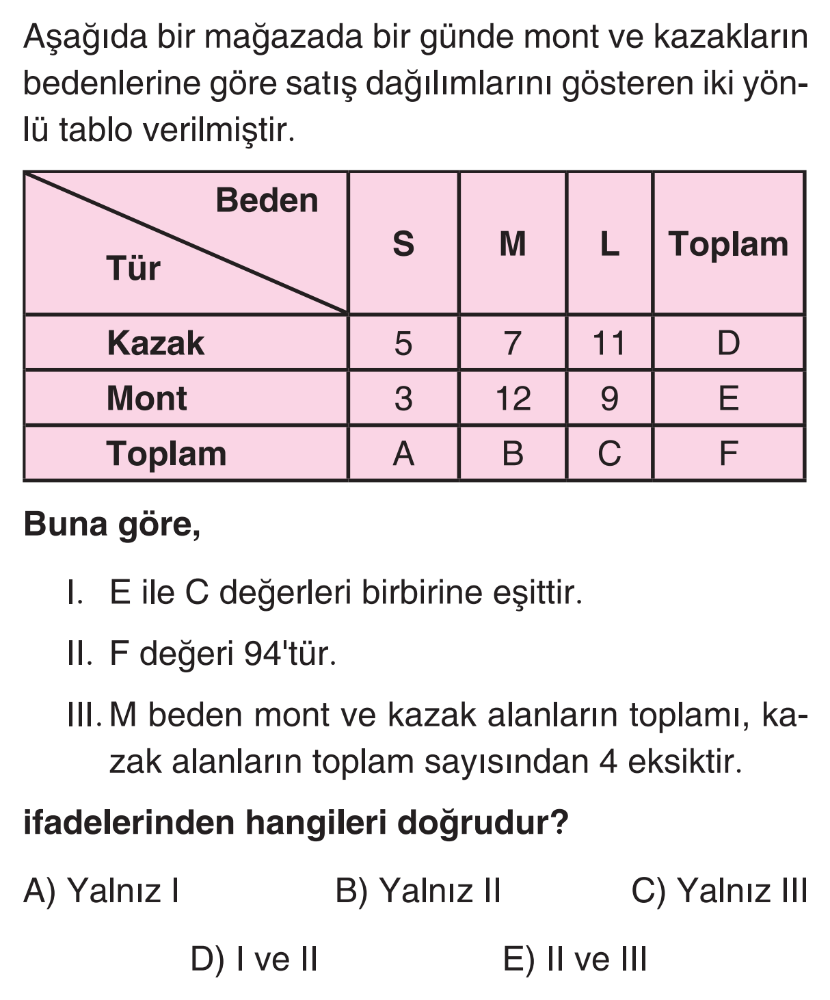
Çözüm
- A = 8, B = 19, C = 20, D = 23, E = 24, F = 47.
- E = 24 ile C = 20 eşit değil (I yanlış); F = 47 (II yanlış).
- M beden toplamı 19, kazak toplamı 23 → 4 eksik (III doğru). Cevap: Yalnız III.
Cevap: C
Soru 14Cevap: E
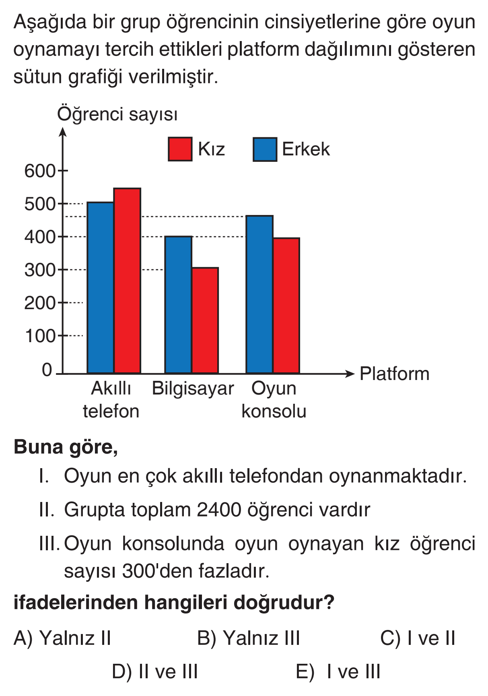
Çözüm
- Grafikten: akıllı telefon 500 + 550, bilgisayar 400 + 300, konsol yaklaşık 460 + 400.
- En çok oyun akıllı telefondan oynanıyor (I doğru); konsolda kız sayısı 300'den fazla (III doğru).
- Toplam 2400 değildir (II yanlış). Cevap: I ve III.
Cevap: E
Soru 15Cevap: E
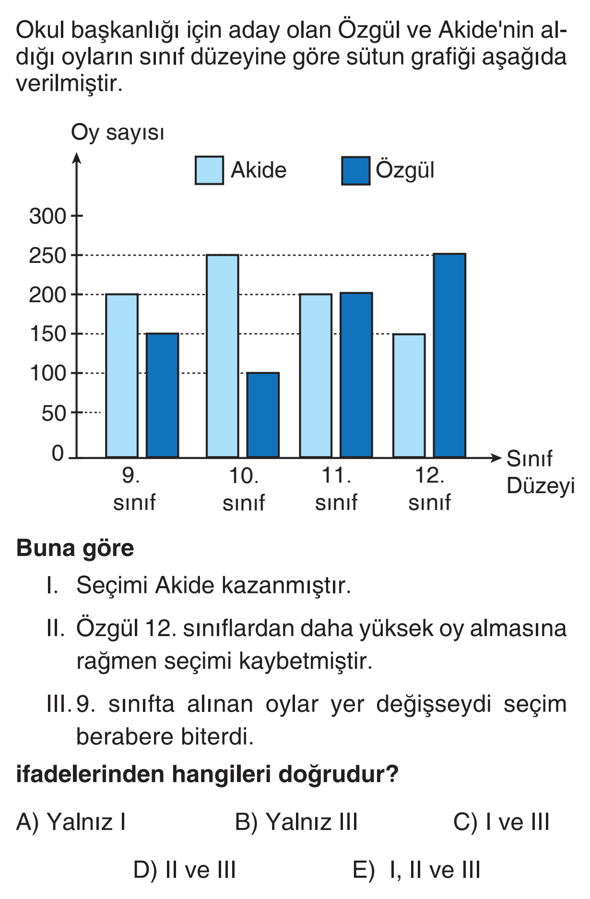
Çözüm
- Akide: 200 + 250 + 200 + 150 = 800; Özgül: 150 + 100 + 200 + 250 = 700 → Akide kazandı (I).
- Özgül 12. sınıflarda 250'ye 150 önde ama kaybetti (II doğru).
- 9. sınıf oyları yer değişirse Akide 750, Özgül 750 → berabere (III doğru). Cevap: I, II ve III.
Cevap: E
Soru 16Cevap: D
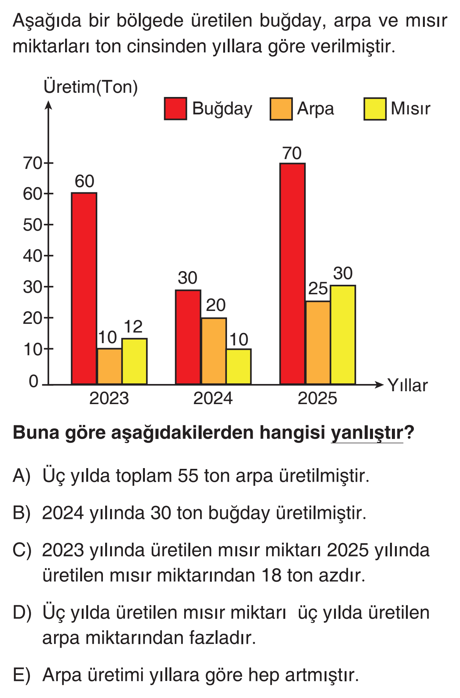
Çözüm
- Arpa: 10 + 20 + 25 = 55 (A doğru); 2024 buğday 30 (B doğru).
- Mısır 2023'te 12, 2025'te 30 → 18 ton az (C doğru); arpa 10 → 20 → 25 hep artmış (E doğru).
- Mısır toplamı 12 + 10 + 30 = 52 < 55 → D yanlış.
Cevap: D
Soru 17Cevap: D
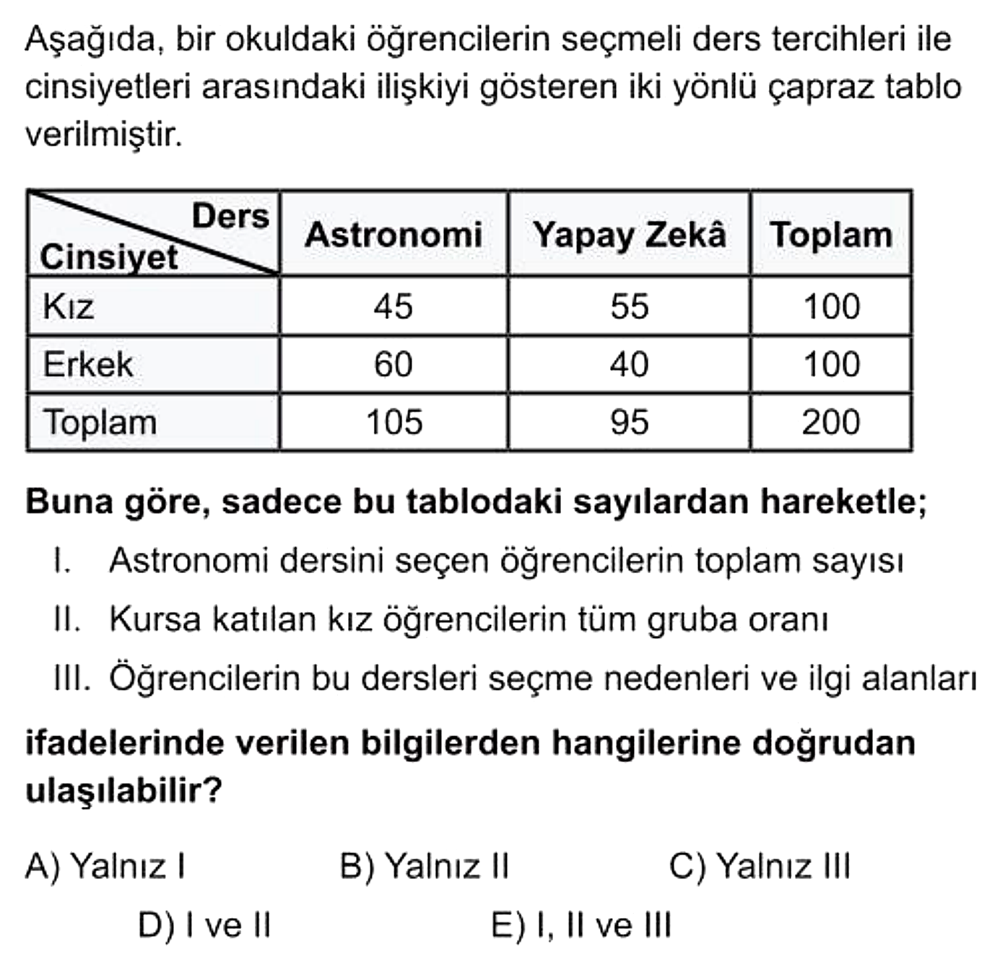
Çözüm
- Astronomi toplamı tabloda: 105 (I'e ulaşılır).
- Kız öğrencilerin tüm gruba oranı: 100/200 (II'ye ulaşılır).
- Seçme nedenleri tabloda yoktur (III'e ulaşılamaz). Cevap: I ve II.
Cevap: D
Soru 18Cevap: B
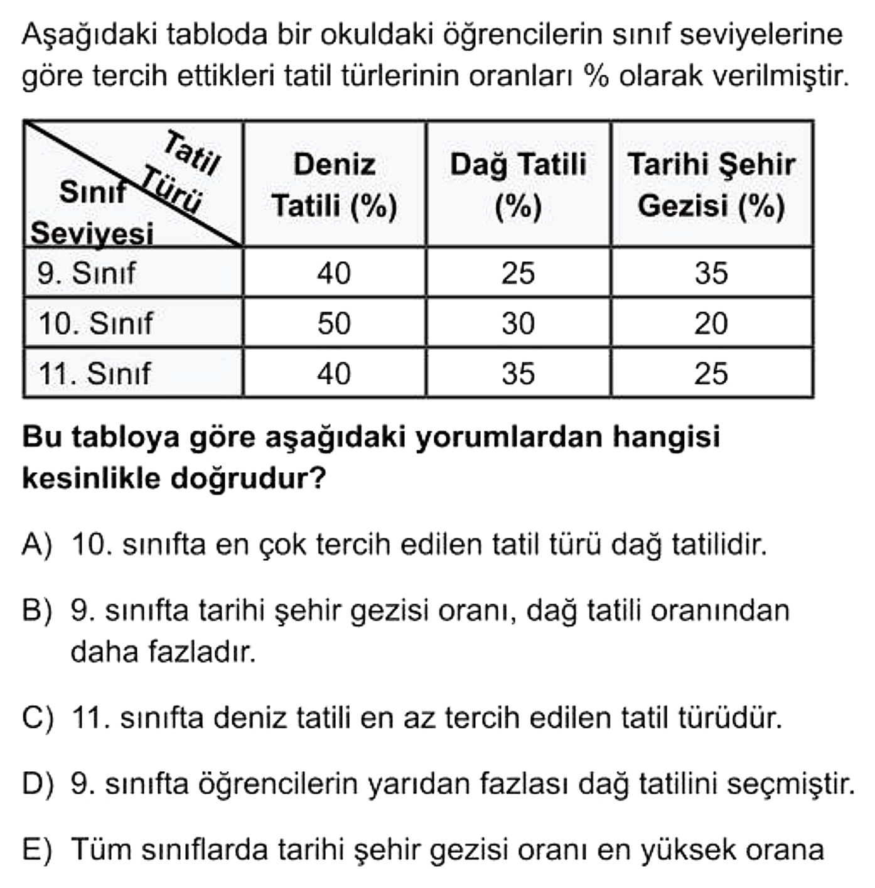
Çözüm
- 10. sınıfta en çok deniz tatili (%50) → A yanlış.
- 9. sınıfta tarihi şehir %35 > dağ %25 → B doğru.
- 11. sınıfta en az tarihi şehir (%25) → C yanlış; dağ %25 yarıdan az → D yanlış. Cevap B.
Cevap: B
Soru 19Cevap: D
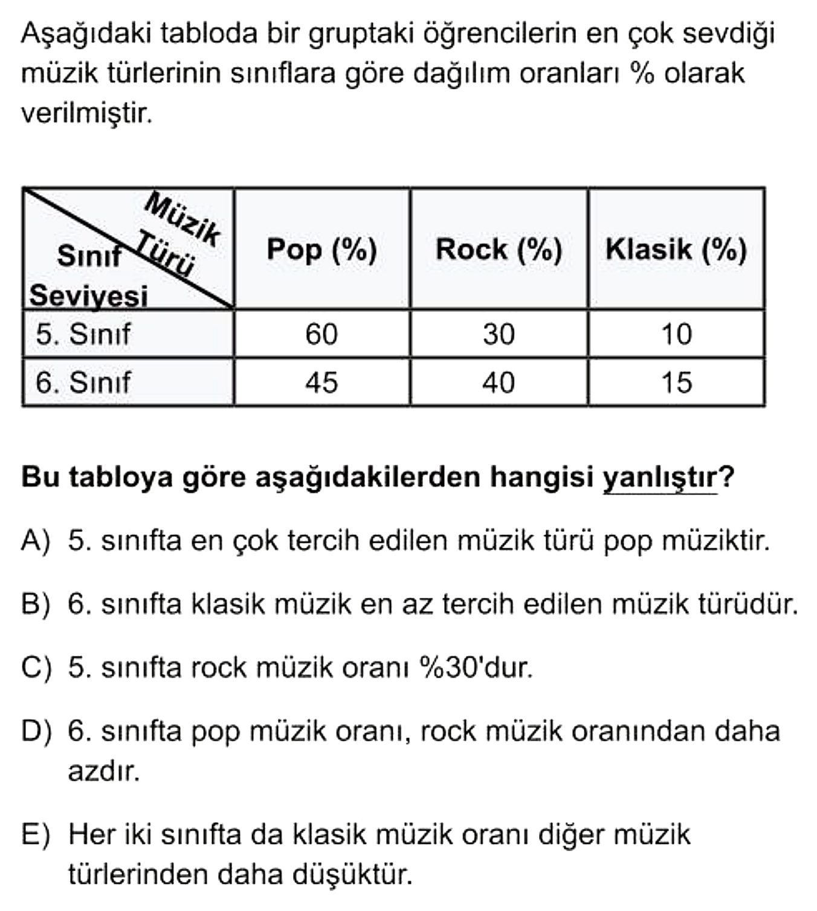
Çözüm
- 5. sınıf: pop %60, rock %30, klasik %10. 6. sınıf: pop %45, rock %40, klasik %15.
- A, B, C ve E tablodan doğrulanır.
- 6. sınıfta pop %45 > rock %40 → D yanlış.
Cevap: D
Soru 20Cevap: E
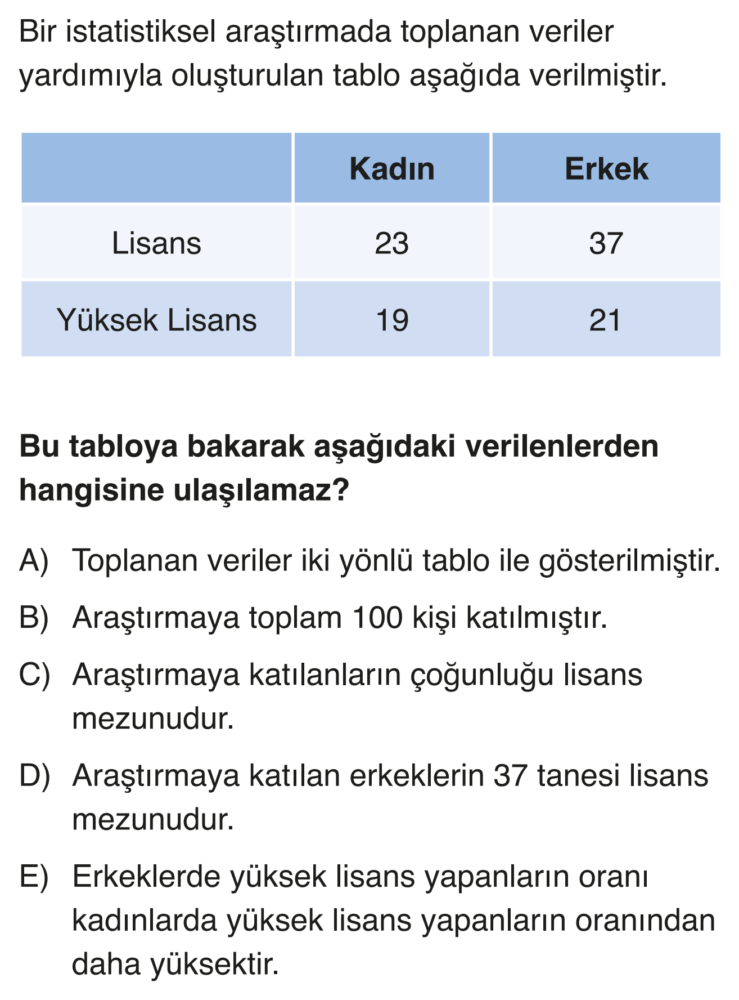
Çözüm
- Toplam 23 + 37 + 19 + 21 = 100 (B); lisans 60 > yüksek lisans 40 (C); erkek lisans 37 (D) → doğru bilgiler.
- Erkeklerde yüksek lisans oranı 21/58 ≈ %36, kadınlarda 19/42 ≈ %45.
- Erkeklerin oranı daha yüksek değildir → E'ye ulaşılamaz.
Cevap: E
Soru 21Cevap: E
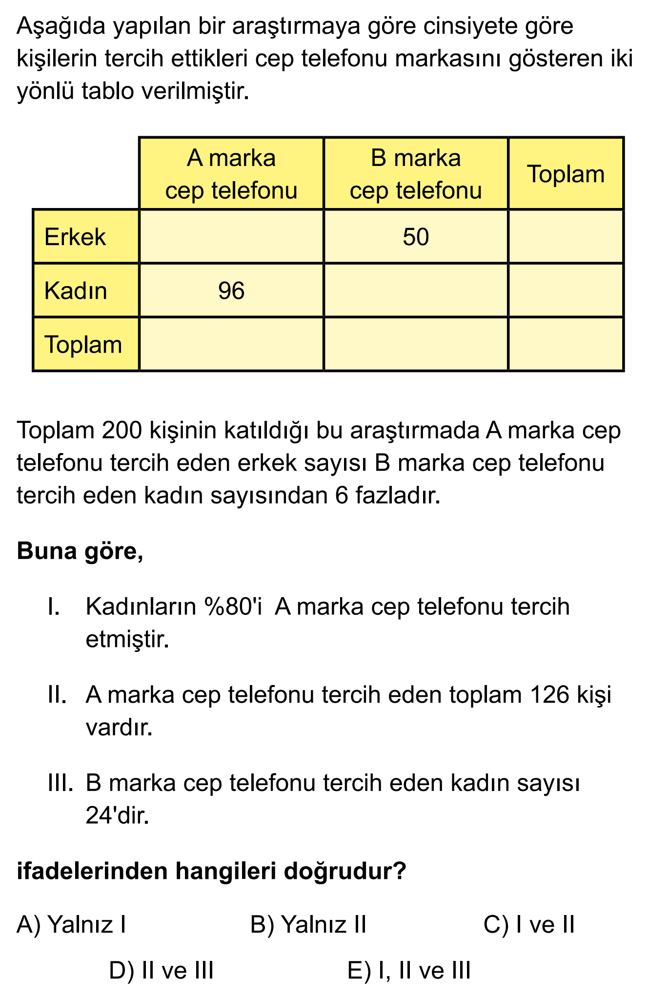
Çözüm
- A marka erkek = B marka kadın + 6. Toplam: (B kadın + 6) + 50 + 96 + B kadın = 200 → B kadın = 24, A erkek = 30.
- Kadın toplamı 96 + 24 = 120; 96/120 = %80 (I doğru). A marka toplamı 30 + 96 = 126 (II doğru).
- B marka kadın 24 (III doğru). Cevap: I, II ve III.
Cevap: E
Soru 22Cevap: C
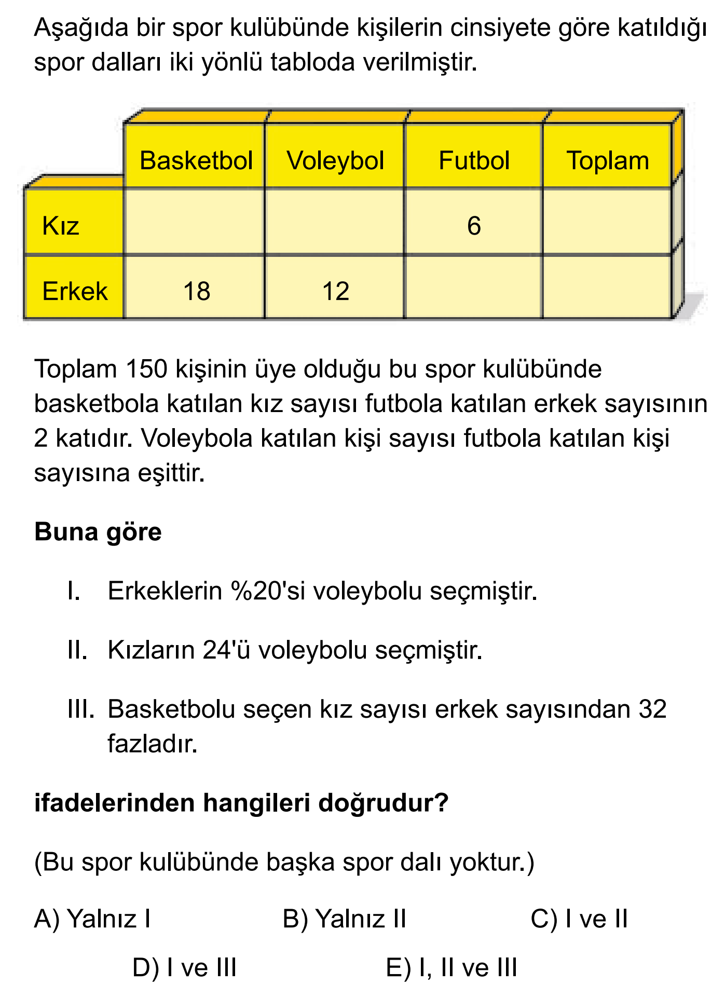
Çözüm
- Erkek futbol = f olsun. Kız basketbol 2f, voleybol toplamı = futbol toplamı → kız voleybol = f − 6.
- Erkekler 30 + f, kızlar 2f + (f − 6) + 6 = 3f; toplam 30 + 4f = 150 → f = 30.
- Erkek voleybol 12/60 = %20 (I), kız voleybol 24 (II) doğru; kız basketbol 60 − 18 = 42 fazla (III yanlış). Cevap: I ve II.
Cevap: C
Soru 23Cevap: C
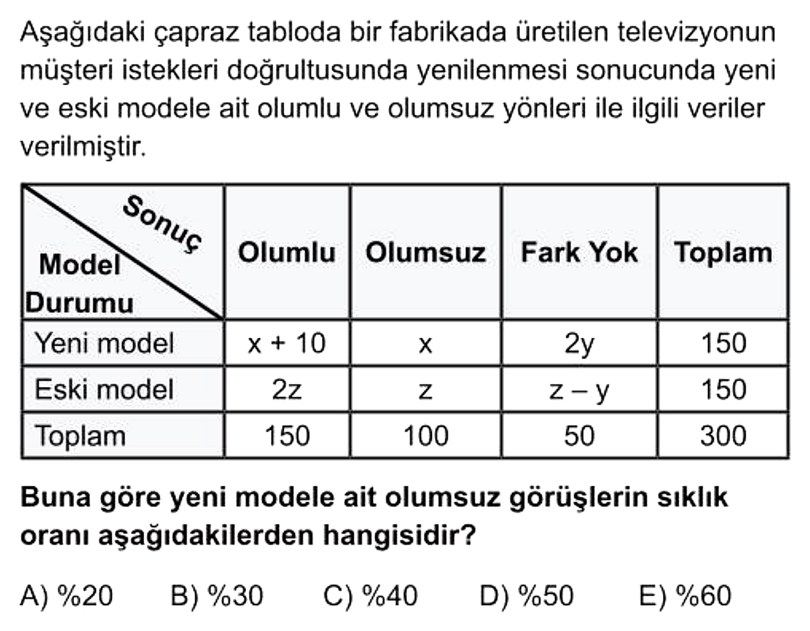
Çözüm
- Olumsuz sütunu: x + z = 100. Olumlu sütunu: (x + 10) + 2z = 150 → x + 2z = 140.
- İki denklemden z = 40, x = 60.
- Yeni modelde olumsuz görüş oranı 60/150 = %40 → C.
Cevap: C
Soru 24Cevap: C
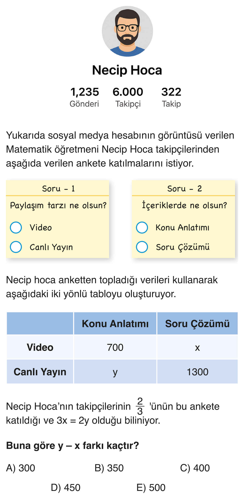
Çözüm
- Ankete katılan: 6000 · 2/3 = 4000 kişi. 700 + x + y + 1300 = 4000 → x + y = 2000.
- 3x = 2y → y = 3x/2; x + 3x/2 = 2000 → x = 800, y = 1200.
- y − x = 1200 − 800 = 400 → C.
Cevap: C